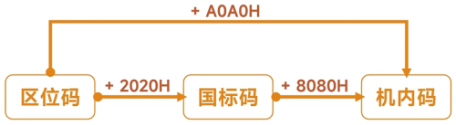

编码
Code
- 内容
-
概述 - 自学系统组成信息表示微型计算机系统 - 自学发展 - 自学
- 重难点
- . 字符集
- . 字符编码
编码
- 字符编码
- . 字符是各种文字和符号的总称，包括各国文字、标点符号、图形符号、数字以及一般不可见的控制字符
- . 字符编码是指将字符表示为一个二进制数
- . 过程：先为字符分配一个代码点，然后用1个或多个编码单元表示，最后转换为直接用二进制数表示的字节序列
- ASCII
- . American Standard Code for Information Interchange
- . 美国国家标准信息交换码的简称，用于编码国际上最通用的西文字符：英文、数字、符号
- . 为常见的字符，分配一个码位，也称编号，当作字符的ID信息，将其转换为二进制以便存储
- . 使用1个字节|Byte表示字符，最高位恒为0，只用 低7位 对字符进行编码，能表示27=127，即0-127，共128种字符
-
ASCII编码 7 6 5 4 3 2 1 0 0 x x x x x x x -
常见ASCII编码关键字符 字符 ASCII码 - 十进制 0 48 A 65 a 97 - ANSI
- . American National Standard Institute
- . 由于ASCII码只使用单字节编码单元中的低7位，因此ASCII码可被扩展
- . 在ANSI标准中，ASCII扩展字符集仍然使用单字节编码单元，要求ASCII码必须用1个等值的高位为0的编码单元表示。但对于其他高位为1的编码单元则依赖于特定字符集的具体定义
- . 通常，将按ANSI标准派生的ASCII扩展字符集统称为ANSI字符集（如Latin-1、GB2312、Big-5等），有时也称为多字节字符集（Multi-Byte Character Set，MBCS）
- . Window系统的记事本，早期默认编码就是ANSI字符集
- GB2312
- . 国标码；GB是国标的首字母
- . 简体中文字符集的国家标准，全称为《信息交换用汉字编码字符集•基本集》
- . 由中国国家标准总局发布，1981年5月1日实施，标准号是GB2312—1980
- . GB2312编码通行于中国大陆；新加坡等地也采用此编码。中国大陆几乎所有的中文系统和国际化的软件都支持GB2312
- . GB2312标准共收录6763个汉字，其中一级汉字3755个，二级汉字3008个；同时，GB2312收录了包括拉丁字母、希腊字母、日文平假名及片假名字母、俄语西里尔字母在内的682个全角字符
- . 因为中文数量庞大，不能像英文那样简单的编号，必须 分区 管理
- . 整个GB2312字符集分成：
- . 94个区
- . 每区有94个位
- . 每个区位上只有一个字符
- . 共计：94区*94位，也使用行和列表示
- . 用所在的区和位来对字符进行编码，得到字符的4位区位码，高2位表示区，低2位表示位
-
GB码的分区 区号 内容 01-09 除汉字外的682个字符 10-15 暂时未启用 16-55 一级汉字，3755个，按拼音排列 56-87 二级汉字，3008个，按部首/壁画排列 88-94 暂时未启用 -
分区示意图 01 02 03 04 05 06 ... 94 01 02 03 04 05 ... 93 x 94 - . ∴ 表中x的区位码为：9306
- . 为了避免和ASCII码的前32个控制字符（0-31）冲突，将区位码+20H进行调整计算才是最终的 国标码
- GBK
- . GBK：GB码的扩展码；K表示扩展，全称《汉字内码扩展规范》Chinese Internal Code Specification
- . 中华人民共和国全国信息技术标准化技术委员会1995年12月1日制订，国家技术监督局标准化司、电子工业部科技与质量监督司1995年12月15日联合以技监标函1995 229号文件的形式，将它确定为技术规范指导性文件
- . 共收录了21003个汉字，完全兼容GB2312-80标准，支持国际标准ISO/IEC10646-1和国家标准GB13000-1中的全部中日韩汉字，并包含了BIG5编码中的所有汉字
- . GBK兼容ASCII字符集
- . 为区分计算机中混合使用的双字节汉字与单字节西文字符，将标识汉字的两个字节编码的最高位置为1，相当于在原有基础上加了80H，得到机内码，不再规定低位>127
- . 机内码是计算机内部真正用来存储、加工和处理汉字的代码
-
国标码 xxxx xxxx xxxx xxxx 80H 80H 1000 0000 1000 0000 机内码 yxxx xxxx yxxx xxxx -
 码的转换 - 某字符的区位码 2083，求x的GB2312编码和机内码
-
拆分为区和位，并转换为16进制，得到x的区位码
20 = 14H
83 = 53H
区位码分别加上20H，得到x的国标码14H + 20H = 34H = 0011 0100B
53H + 20H = 73H = 0111 0110B
区位码分别加上A0H，得到x的机内码14H + A0H = B4H
53H + A0H = F3H
-
Pyhton编码 >>> '大'.encode('gb2312') b'\xb4\xf3' -
Pyhton解码 >>> b'\xb4\xf3'.decode('gb2312') '大' - ：如果不转为机内码会怎么样？
- Unicode
- . Universal Code，通用码或统一码、也称万国码
- . 是当前国际上最通用的字符编码规范，它为全世界所有语言的每个字符都设定了统一并且唯一的二进制编码，以满足跨语言、跨平台进行文本转换、处理的要求
- . 采取可变长编码方案：1个字节、2个字节、3个字节、4个字节，其中英文1个字符，中文3个字符
- . 并不是简单的拼接，而是有一定的规则
-
UTF-8编码规则 单字节 0xxxxxxx，就是ASCII码 双字节 110xxxxx 10xxxxxx 三字节 1110xxxxx 10xxxxxx 10xxxxxx 四字节 1110xxxxx 10xxxxxx 10xxxxxx 10xxxxxx - 字符"我"的UTF-8码值为(25105)10，十六进制为(6211)16，二进制为(0110 0010 0001 0001)2，实际编码如下：从后面向前填充
-
编码 三字节 - 2进制 1110 0110 10 0010 00 10 01 0001 三字节 - 16进制 E6 88 91 -
Pyhton >>> print('我'.encode('utf-8')) b'\xe6\x88\x91' >>> - 使用python的ord函数和chr函数查看字符对应的编码或数字
- . ord()：字符编码
- . chr()：字符解码
-
Pyhton >>> ord('a') 97 >>> chr(49) '1' >>> ord('我') 25105 - 借助现有环境，查看编码对中文的影响
- . 更多汉字编码，请自行查阅在线编码工具
- BIG-5
- . 繁体字编码方案，又称大五码，主要为香港与台湾地区使用
- . BIG-5码收录13461个符号和汉字，每个汉字由两个字节构成，第一个字节的范围在A0H-FEH之间，第二个字节的范围不连续，分别为40H-7EH和A1H-FEH。因此。其第一个字节的最高位总是1，第二字节的最高位可能是1或0
-
Tips. ASCII字符集：1个字节. GBK字符集：汉字占2个字节，英文、数字、符号占1个字节. UTF-8字符集：1个字节、2个字节、3个字节、4个字节，其中：汉字占3个字节、英文、数字、符号占1个字节. 编码和解码必须使用相同的字符集. 英文一般不会出现乱码，因为一般字符集都兼容ASCII字符集，所以出现乱码的大都是非英文字符集. 码的转换区位码 + 2020H = 国标码国标码 + 8080H = 机内码区位码 + A0A0H = 机内码